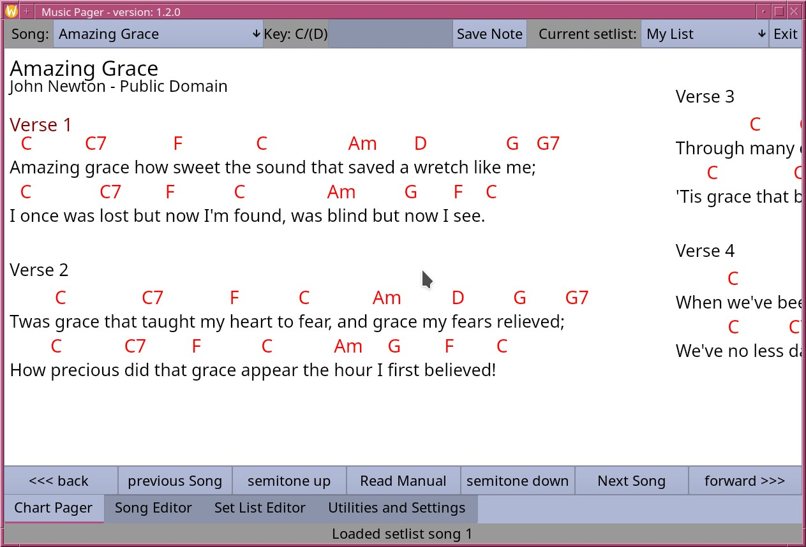

Bug reports, feature requests and comments are probably the best support we could ask for. Some people would like to give more.

Music Pager is a musician's utility for displaying chord charts. It uses Chordpro formatted files as input. See Chordpro.org (I would also suggest installing the chordpro utility as it is helpful for converting other file formats to chordpro and allows printing physical copies in the right key for other band members etc.)
Music Pager allows on the fly key changes, custom formatting, foot pedal paging with bluetooth, USB and MIDI pedals, etc. Songs can be entered or edited directly. Set lists can be created. Songs can selected by filename or searched for by text. If the song file includes a song number from a download site such as CCLI, that number can be searched as well. Each song can have musician's notes added either as part of the play list or direct to the song file without those notes showing on a chordpro print for other musicians who want different notes.
Bug reports, feature requests and comments are probably the best support we could ask for. Some people would like to give more.